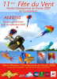
Deuxième sélection pour le Championnat de France 2008 pilotables, Ligues Nord-Pas-de-Calais et Picardie, organisée par Hubert Dessaint. Je ne fais pas de pilotable (pas au niveau des Championnats, en tout cas !), mais il y a toujours du monofil là autour. D'ailleurs sur l'affiche, il n'y a que des monofils !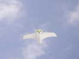
J'arrive samedi matin, on m'offre un petit café-croissants. Pas se presser, pas un poil de vent. Je sors mes indoors, la raie Manta, puis le Harfang au-dessus de 0,5 m/s...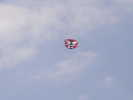
Pas grand monde en l'air. Un Dopéro vient compléter la dotation...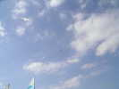
A nous deux, on meuble. Il y a aussi quelques pilotables légers qui volent, mais les arbres coupent le vent en bas...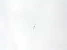
Pas de vent, du thermique se développe et un planeur vient traverser le coin sous les nuages...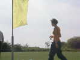
Une petite journaliste arrive (en vélo) pour interviewer Hubert, qui restera longtemps avec elle...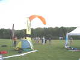
Un parapentiste vient montrer sa grande voile (16 m2, je crois) toute neuve. Il escaladera même un remblai de 20 m de haut pour un essai... peu concluant !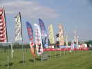
A midi, hot-dog pour tout le monde. L'après-midi, pas plus de zeph, heureusement il fait beau... Le vent fait plusieurs demi-tours complets !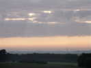
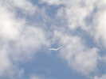
Bon, du vent, je monte Megoel. Aussitôt, le vent s'arrête ! Mais, après quelques hésitations, il s'établira pour la journée ! Heureusement, car c'est le jour de la compétition de pilotables.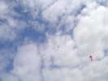
Hubert a aussi monté quelques monofils pour meubler, et il n'est pas seul !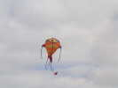
Il y a un superbe Piranha, comme le vert des Awita, et aussi beau ! Il a une énorme bouche bien sûr.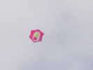
Ce Rokkaku avec sa jeune fille fera partie de ceux qui resteront en l'air tout le jour...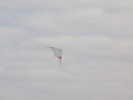
Il y a aussi de jolis pilotables, la preuve...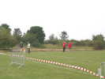
Les Championnats vont commencer, les juges (en rouge) sont en place, et Hubert briefe le seul juge de ligne. Il est vrai qu'avec ce vent moyen et régulier, les risques de sortie sont faibles !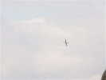
Tient, un Fouga Magister qui se promène... Je croyais qu'il était retiré des vols, mais il existe un loueur qui propose des vols "de type Chasse" (!) sur cette machine, à http://www.fouga-magister.com/ .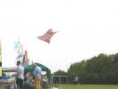
Un grand Météo (4 m ?) quadrillé volettera à quelques mètres du sol, mais ne restera pas en l'air. Dommage...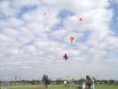
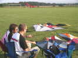
Avant leur présentation, les teams répètent leur routine au stick...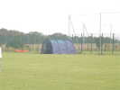
Sylvain a monté une énorme tente, comme celle de David et Gwennaelle à Penvins...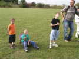
J'ai fait une cure de jouvence, mais c'est bien moi, avec mon pliant et mon dérouleur (et Megoel là-haut, dans votre dos) !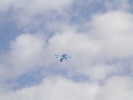
Le grand Météo a été remplacé par un plus petit qui, lui, vole. Un peu oscillant quand même, la toile sans doute un peu trop tendue...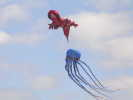
Sylvain a lancé son Gecko qui plaît beaucoup et une petite pieuvre. Plus tard, il montera la jaune, la grande, et sa raie...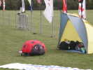
Pendant que je ne suis pas là, ma coccinelle monte la garde devant ma tente !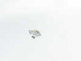
Là-haut, une réplique de Pantenier (modifié ?) volera bien stable tout l'après-midi...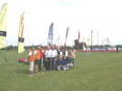
Au sol, les participants au championnat posent pour la photo. Le Président de la FFVL (Jean-Claude Benintende ?) est venu rendre une visite prolongée à ses troupes et pose avec Hubert, Président pour le Cerf-Volant !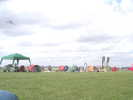
Les cervolistes ont monté des tentes, Monsieur Quechua a fait un tabac, on ne voit plus rien d'autre !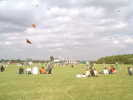
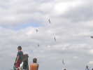
Sous les yeux d'un public épaté, les Tatoueurs tournent à cinq un ballet impeccable...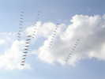
Un ballet de trains de deltas enrubannés montera aussi un spectacle impressionnant...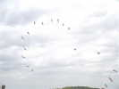
Pour finir, on ne se quitte pas sans un beau Mégateam, avec pas mal de monde et peu d'erreurs malgré un vent un peu juste !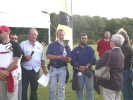
C'est l'heure de la remise des prix. Hubert remet des coupes, des T-shirts et des poignées de stylobilles aux armes de la Somme...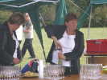
Pendant ce temps, le pot final se prépare sous le barnum dépliable...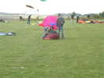
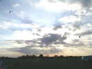